收录于合集
简
李 畅： 南开大学周恩来政府管理学院博士生
程同顺： 南开大学周恩来政府管理学院教授，博导
本文经国政学人微信公众平台编辑首发
【 内容提 要】
本文尝试对非洲各国潜在政变风险进行测量和比较。政体、政治文化、法治、军队和经济状况等五个方面被认为是诱发政变的重要因素。在对其进行概念化处理后，分别提取非洲54个国家的政体指数、 政变 次数、法治指数、 军费占GDP比重 和人 均GDP增幅 的五个指标，聚类成各国潜在政变风险系数进行对比。结果显示政变风险 极高 的有 中非共和国 等10个国家； 较高 的有利比里亚等 12个 国家； 中等政变风险的 有 冈比亚 等10个国家；较低风险的有 埃塞俄比亚 等9个国际；极 低风险的 有 佛得角 等13个国家 。 在此基础上对非洲未来中短期的政变趋势进行分层探讨，并在文末提出应对非洲国家政变风险的具体措施。
**【 关键词 】 **政变 ； 非洲国家 ； 政治动荡
2008年金融危机以来，全球大部分国家和地区，经济发展呈现乏力之势。“然而,非洲作为发展中国家最多的大陆,近年来成为全球经济的一个亮点”。据统计，中国对非州国家的直接投资存量已从2007年的44.61亿美元，增加到2015年的346.94亿美元，年平均增长约为29.2%（详见图1）。国家主席习近平2015年12月访问非洲时发表演讲，称“中国真诚希望同非洲国家分享中国经验，愿为非洲工业化进程提供资金、技术、人才支持。”可预见的将来，将有更多的中资企业投资非洲大陆，中非交往也将日益密切。
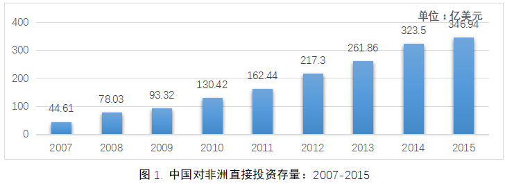
由于非洲历史上战乱不断，因而造成域外企业一方面渴望赴非投资的高回报率，一方面也忧心政治不稳定给企业经营带来的巨大风险。作为政治不稳定的表现形式之一，政变在全球范围内已呈明显下降趋势。但我们也不难发现，冷战后政变现象相对集中的地区，往往是中资企业“走出去”的重要目标国（详见图2）。从现有研究成果来看，我国政治学界对政变现象关注不多。对这一政治现象的研究，既有助于我们探究政变发生的内在机理，同时也有助于我国企业在赴非发展时，及早做出正确判断，降低投资风险。 （本文经国政学人微信公众平台编辑首发）
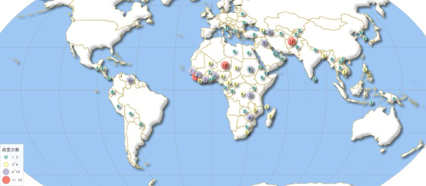
图2. 全球政变分布图：1991-2015
一、对政变诱发因素的分析
从现有文献来看，相比政变的概念探讨，学者们对“是什么诱发了政变”更为关注。随着社会科学的发展，西方不少学者选择使用实证性的统计研究方法对假设的自变量进行检验，发现例如政体、国防预算、国际援助等因素都可能诱发政变。本文选择学界最为重视的五个政变诱因进行详细探讨。
（一）诱发政变的政体因素
二战结束后，亚洲、非洲、拉丁美洲不少前殖民地国家开始了反帝反殖运动。尽管各国各派政治势力对“民主”涵义的认知不同，但都认为建立民主政体是实现政治发展的必然选择。同时，各派势力在实现自身政治目标时，过度的政治动员导致了严重的政治动荡。政变，作为政治动荡中最为极端的形式频频出现在亚非拉地区，这一现象引起了政治学者们的极大兴趣。尽管发生政变的国家及政变成功的数量在冷战结束时均达到了峰值，并在其后急剧减少，但在西方政治学界，对政变的研究兴趣，却丝毫没有减弱（详见图3）。
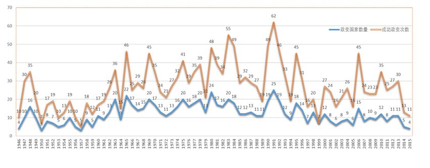
图3. 全球政变国家数量/政变成功次数统计图：1946-2015
如许多观察者所发现，自20世纪70年代开始的“第三波”民主化浪潮中，不少国家是通过军事政变实现政权更迭，进而开启了本国的民主化进程。据统计，在1945-2002年间，被成功的政变罢黜下台的独裁者多达205个。因此，西方不少学者乐见政变发生，认为在当代国际社会背景下，不论政变成功与否，都将会使统治者在国内不同程度地推行民主。C.西恩与J.鲍威尔合著的《摧毁政权还是摧毁独裁？政变如何影响民主化，1950-2008》揭示了政变有助于实现民主的两个理由：一是为了稳定国内秩序促进经济增长，推行民主制度是新领导人的最优选项；二是失败政变会使独裁者反思当前政策，推行符合民众利益的各项改革措施。尽管许多国家建立起相对成熟稳定的民主政体，但依旧让研究者们感到困惑的是，如何解释民主国家依旧会发生政变的原因。因此，该领域的研究者首先要探究的问题就是：何种政体与政变现象的相关性更大？换言之，专制和民主，何种政体更容易诱发政变？
坚持民主政体不易诱发政变的一方认为，民主制度有效地保障了宪政框架内明晰的竞争规则，有序的竞争局面，以及依靠和平方式实现政权交替的可能。同时，国家权力向任何有参政意愿的人开放，选举过程是透明的，选举结果是非预定的。因此，在这种制度下，选择高风险的极端方式去获取政权，显然是愚蠢而无效的。 对此，E.鲁特瓦克略带讽刺的评论道：“由少数精英控制的极权国家，其政权被视之为需要精心守护的珍宝；而在成熟的民主政体中，政权如同自由流动的空气——谁能据为己有呢？”
持相反观点的研究者认为，专制政体很难发生政变的首要原因是独裁者会对试图通过发动政变颠覆政权者处以极刑，这一震慑作用将使得任何预谋者都必须对政变失败的后果加以慎重考虑。其次，独裁者往往在专制政体下营造使下属互相猜忌、相互告密的恐怖气氛，这使得预谋者之间很难建立起信任关系，形成合力。
就政体类型与政变风险相关性的研究，近年来出现了 第三种观点，即纯粹的民主政体与极端的专制政体下，政变的风险都很低。相反，处于两者之间的混合政体才具有较高的政变风险。这一观点不仅新颖，而且得到实证研究的数据支持，更具说服力。 美籍日裔学者广井多惠子（Taeko Hiroi）及其合作者大森泽（Sawa Omori）在《政变的诱发因素：一项基于事件历史性的分析》中选取了1946-2009年间所有政变事件（并未区分成功与失败）为总样本，并依据“第二代政体指数”（Polity II）为标准，将所有发生政变的国家划分至【-10，-6）、【-5，5】、（6，10】三个区间，分别归为专制政体、混合政体和民主政体，测算不同政体与政变发生的相关性。作者发现，混合政体较民主政体发生政变的风险高出57%，较专制政体则高出45%。其结论有力支撑了混合政体更容易诱发政变的观点。
（二）诱发政变的政治文化因素
学者在对政变现象进行研究时，都会发现非洲地区的政变现象具备样本总量大、分布广、出现频率高等特点，因而对该地区投入更多精力，希望能从中探究出政变发生的更深层次原因。但对任何地区开展研究，都应将其放在历史文化的大框架内。15世纪之前，非洲地区（特别是撒哈拉以南地区）社会结构还是以部落为基本单位，原住民的生产方式和生活方式十分落后。十六世纪以来，欧洲各国殖民者陆续登陆欧洲，一边大兴奴隶贸易，一边大肆掠夺矿产，并无心促进其殖民地发展，增进当地居民福祉。直至二战结束，欧洲殖民者离开时，其遗留下多年的政治遗产仅为高度军事化的黑人士兵及其热衷使用武力解决问题的思维定式。据美国的系统和平中心（Center for Systemic Peace）蒙蒂·马歇尔博士一项持续观测全球范围内政变事件的数据记录显示，1946-2004年间通过成功发动政变实现权力更迭的事件就有80次之多。美国学者A·R·左尔伯格（Aristide R. Zolberg）就曾发表论文《热带非洲地区新独立国家的政治冲突结构》，分析了某些国家高频率发生政变的历史性因素及其内在机理。一国之内，历史上的政变会诱发日后的政变。成功的政变者会让后人勇于做出同样的尝试。可见，政变一旦成为某国某地区政治文化的一部分，那么政变的发生仅仅意味着何者可以（也许仅是暂时）掌控政府，而不意味新的执政者愿意或能够对原有的政治结构进行任何改变。 因此，政变这一政治现象的根源既深植于国家内部的结构特征，又是该地区政治文化传承的自然结果。同样，政变的发生又反向强化了本国的政治结构，同样也继续塑造着这个国家的政治文化。
尽管左尔伯格早在20世纪六十年代末，就从非洲地区诸多新近独立国家内部观察到“历史上的政变容易引发日后的政变”这一规律并加以总结。但如果超脱时空限定，将此规律适用的时空坐标由近及远，我们依旧可以发现在全球其他地区，诱发政变的政治文化因素同样重要的作用。近东地区的土耳其、伊拉克，中亚国家阿富汗，东南亚国家泰国、菲律宾，中美洲国家洪都拉斯、委内瑞拉等国同样政变频发。尽管每次政变的发生，都有其具体而深刻的政治、经济、社会因素，但由历史上频繁出现的政变事件积累而成的“历史记忆”，同样是引发后续政变不容忽视的重要因素。
（三）诱发政变的法治因素
政变是一种以违反宪法与法律的方式，通过实施暴力或以暴力相威胁的途径推翻现政权的极端政治行为。政变行为带有明显的违法性质，这也让学者们开始思考诱发政变的法治因素是什么。
依据马克斯·韦伯（Max Webber）对政治合法性来源的分类，所有国家都可划分为传统型、“克里斯玛”型（又称魅力型）和法理型。前两者的合法性来源分别是社会传统习惯和政治领袖的个人魅力；而法理型国家的合法性则建立在公民对普遍法律认同的基础之上，因而此类型的特点是崇尚法治。韦伯认为传统型和“克里斯玛”型国家因为其合法性来源不够持续和稳定，国内出现政治动荡的可能性较法理型国家必然高出很多。因此，政变作为政治不稳定现象极端表现之一，其出现的概率与国家法治状况必然有其内在相关性。
一般而言，一国的法治状况将体现在社会的不同领域和各个层次上。在社会政治领域中，法治缺位所造成的直接后果就是各方利益主体之间的矛盾，容易因为缺乏对宪法和法律的信仰而形成持续对立。 特别是近代西方国家崇尚权力分立与制衡的政治理念，在立法、行政与司法部门之间，联邦与各州之间，代表不同利益群体的党派之间，存在相互钳制的多种机制。二战后，美国竭力将以分权制为特征的“美式民主”无差别地“移植”到亚、非、拉新近独立的国家和地区。从全球范围内的案例来看，“移植民主”造成各派势力过度竞争，极易形成政治“残局”，而由此引发的政变事件并不在少数。
1995年1月，尼日尔总统马哈曼·奥斯曼极不情愿地任命了在立法选举中获胜的反对派领袖哈马·阿马杜为总理。其后，二人近一年的权势较量使国内政局处于持续混乱状态，社会经济生活受到严重干扰，国民深受其苦。次年1月27日，尼国武装部队总参谋长易卜拉欣·巴雷·马伊纳萨拉发动政变监禁了包括总统、总理在内的一批政界要人。政变发生后，许多西方国家和部分非洲国家纷纷发表声明对此进行谴责。而与国际社会的反应相反，尼国大多数民众对军人的政变行动表示理解与支持。从此案例来看，一国法治状况欠佳不仅容易形成政治僵局进而诱发政变，还容易使普通民众对军事政变抱有一种认可和包容的态度。由此可能形成恶性循环，即军人集团自持民众的宽容与理解，频繁以“收拾政治残局”为名发动政变，从而降低自身擅用武力的道德门槛，强化了军人肆意破坏法治的不良风气。与上述尼日尔发生的案例相反，素有深厚法治传统的斯堪的纳维亚地区与盎格鲁- 撒克逊国家极少发生政变，这从另一角度映射出一国法治状况与潜在政变风险的相关性。
（四）诱发政变的军方因素
从现实层面来看，对政变动因最直观的解释就是国家机器中的强力部门对国家权力领导层的不满与反叛。 回顾历史上发生的所有政变事件,无不是依靠或威胁以武力来推翻当权者来获取政权，在一些 “军队专业化”程度不高的国家更是如此。从国家的本质与职能角度来分析，军队、警察、情报（安全）部门作为最强力的政治统治工具，对所有的领导集团而言都是须臾不可或缺的。但由于任何政府职能部门都有其自身利益，强力部门自然也不例外。这种部门利益必定不会在任何时间与领导层的意志，以及国家机器的整体利益都保持一致。甚至在某些时期，相互间的冲突还会因特定政治经济状况的恶化而加剧。因此，如何处理好文武关系（the civil-military relation）是任何国家领导集团都要面对的现实，同时又是对其执政智慧的持久考验。一般而言，不同国家的领导层都要面对“文武关系”三重困境。首先，必须让军队强大到足以保护国家安全不受外部威胁。其次，武装力量不能对国内政权构成威胁。最后，在民主国家内，军队还必须符合民主政治的要求。
军事武装力量作为诱发政变的重要因素之一，我们可以对其从宏观和微观两个层面来理解。在宏观层面上， 军事武装力量作为国家机器最核心、最关键的部门之一，其重要程度一方面可以从军队领导人在国务活动中的地位加以体现；另一方面可以从军费支出占当年国民生产总值（或国家财政预算）的比例高低加以体现。 在微观层面上， 军队高层的职务晋升、个人政治野心，以及普通士兵的武器配备、待遇保障等实际状况都可能成为军事政变的诱发因素。由于对诱发政变军方因素的分析往往需要结合具体的现实情景，因此，相关分析大多使用的是定性方法的国别研究。
（五）诱发政变的经济因素
在当今的社会科学领域，有大量关于社会经济发展状况与社会政治稳定之间相关性的研究。早在一百多年以前，托克维尔 (Alexis de Tocqueville) 就注意到，最有可能发生社会动荡的时刻是经济停止增长、开始出现下滑的拐点。但不论是在经济学界，还是在政治学界，都存在对上述观点进行反驳的声音。道格拉斯.诺思（Douglass C. North）在《经济史中的结构与变革》中就认为，经济增长非但无法保障社会稳定，相反却极易造成社会动荡。美国政治学家S.亨廷顿则认为经济发展和政治稳定是两个独立因素，但经济发展往往成为造成社会冲突的直接原因。
尽管关于经济发展与社会稳定相关性的探讨，持续到今天也仍未有定论，但这说明了经济发展与社会稳定之间存在着稳定而深刻的联系，需要我们更加审慎地加以分析。 马克思主义唯物史观认为，政治是经济的集中表现，因而作为政治不稳定极端形式的政变现象，就必然是以社会经济状况恶化为前提条件的。不论发动者是谁，是何目的，成功与否，政变的发生都是部分军政精英希望破解当前社会、经济困境的一种尝试。需要指出的是，应该具体地、审慎地认识经济状况恶化导致政变发生这一命题，前者是在两个并行却又相互影响的层次上使一场政变最终成为可能（详见图4）。在第一个层次上，一国之内社会经济状况恶化必然会招致国民对政府当局的愤懑。在民主社会里，由于国民可以自由批评政府，从而很容易导致表现出对当权集团的嘲弄与厌恶；在专制政体下，国民往往忌惮于政府的恐吓与惩戒，极易将对经济恶化的不满转化成政治冷漠。在另一层次上，社会经济状况恶化而引发的一系列社会、政治危机也为敢于铤而走险的军人集团提供了发动政变夺取权力的绝佳机会。政变者会一方面密切关注民意动向，一方面密切关注最高层在经济、民生、司法、外交、国防等领域的政策过失，等待最佳时机实施行动。二十世纪八十年代前期发生在尼日利亚的军事政变就是经济状况恶化成为诱因的经典案例。1979年谢胡·沙加里文官集团上台执政，短短五年尼日利亚经济衰退严重，占人口绝大多数的乡村和城市贫困居民生活水平持续下降，人均国民生产总值从1980年的871美元下降到1983年444美元，民众不满情绪严重。1983年12月31日凌晨，尼国武装部队第9步兵旅和首都警卫旅发动政变，其领导人宣称政变的根本目标是“把我们的祖国从完全崩溃中挽救出来”。新的军政府上台后实施的一系列社会经济政策迅速改善了民生状况，并使得整个社会的风气出现了良好的转变。 （本文经国政学人微信公众平台编辑首发）
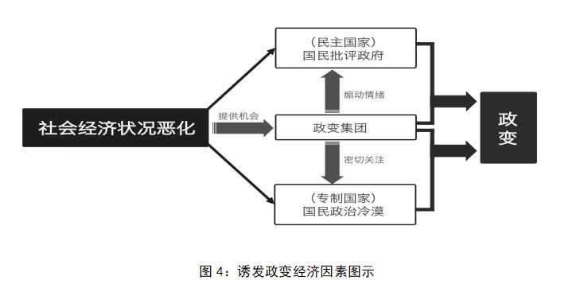
二、 对非洲政变风险的测量与比较
诱发一场政变发生的因素是多种多样的，这些原因既是历史的，也是具体的。对政变的诱因作任何简单、主观的推断都是不够审慎的。但就不同国家间潜在的政变风险进行比较分析，这不仅有地区研究的理论意义，还有为赴非投资提供风险评估的实际意义。本章尝试对此进探讨。
本文首先选取能够相对准确体现上文诸政变诱因的指标，然后将五个变量聚类成能体现该国政变风险的总体指标，最后将所得结果排序并划分等级。
（一）样本的选取与数据的获取
根据上述对政变诱因的分析，本文从全球社会科学领域认可度较高的研究数据库中，获取能体现非洲54个国家的政体状况、政变历史、法治状况、军事支出和经济状况五项指标的数据。
随着20世纪实证研究方法的发展，学者们对民主的讨论已经从定性分析发展到定性与定量结合使用的阶段，对民主质量的测量也进入了相对成熟的阶段。在诸多民主质量测评体系中，受到较高评价的是由系统和平中心发布的“第四代政体指数”（Polity
IV）,“自由之家”（Freedom House）发布的“自由指数”（Freedom
Index），以及由“《经济学人》信息部”(EIU)发布的“民主指数”(Democracy
Index)。尽管“自由指数”和“民主指数”同样受到追捧，但前者遭人诟病的是该测量体系中个人自由的指标被过分重视，以至于很难说该测量体系评估出的是政体的民主质量，还是公民自由度；而后者受到的批评是评分不够审慎，例如民主化之前的缅甸得分常年徘徊在2.00上下，在实行普选后的2015年一跃至4.14分，这难免让人质疑“民主指数”测量的究竟是民主质量，还是民主形式。“Polity
IV”因重视对民主质量的测量，并突出了民主（或独裁）发展趋势的时间跨度与精度，成为学者们进行跨地域以及历时性政体比较研究的首选工具。 本文使用“P
olity IV
”来测量非洲54个国家的政体状况，并标记为字母p，并查询非洲范围内最近三年（2011、2012和2013年度）的数据，分别标记为p 1
、 p 2 、 p 3 ， ，求其平均值 ** **p，这样就可以相对准确地了解近年非洲某国的民主（或独裁）状况。** **需要指出的是，Polit** **y IV** **未给出诸如塞舌尔和南苏丹等国民主质量的数据，则在下表中标记“—”，并在后续的运算中规定** ** p= 0 （详见表
1 ）。
对非洲各个国家较早前一段时间内发生政变频次进行统计，需要使用既能对政变的发生有准确标准，又能对政变的事态有可信记录的数据库。据C.西恩和J.鲍威尔的统计来看，现存记录政变事件的数据库共15种。 总体观之，这些数据库存在以下四个问题。首先，样本数量不同。 各数据库的创建者都是依据自己对政变的定义来搜集案例，因此搜集一定时间内的样本，会因“政变”一词范畴的宽窄不同而呈现明显的数量差异。 其次，时间跨度不同。 不同的研究者都是基于自己研究目的来搜集数据。有的学者希望创建一个具有全球影响力的政变数据库，比如C.西恩和J.鲍威尔的数据库，其跨度为1950-2015；而有的学者相对务实，倾向于在较小范围内寻求更为精确的案例，比如英国的欧凯恩所创建的数据库，其时间跨度为1950年到1971年。 再次，覆盖地域不同。 大多数政变事件数据是覆盖全球范围，但也有少部分数据库是仅就某一地区搜集数据，其中地域性数据库又以非洲地区为主。 最后，更新速度不同。 比如，C.西恩和J.鲍威尔所创建的政变数据库力求逐年更新，但是有的数据库则更新缓慢，比如E·鲁特瓦克于1969年搜集来的数据，直到2016年其著作再版时才进行更行，间隔47年之久。
本文认为，在使用数据时，优先选择概念界定清晰且能及时更新的数据库较为妥当，而蒙迪 ·马歇尔 等人开发的“政变事件，1946 ****-2015”数据库满足上述条件。 为了使本文的研究结果兼具时效性和准确性，我们选择“压缩”政变历史，仅统计1991-2015年间非洲各国的政变次数，并将其标记为f。 据统计，在此时间段内从未发生过政变的国家有20个，而发生政变次数最多的国家为赞比亚，共14次，故f值所在区间为【 0， 1 4】 （详见表2）。
在世界范围内，旨在测量某国法治状况的指数已经屡见不鲜。但其中在全球具有较高认可度的，一是由“世界正义项目”（ WJP, World Justice Project）发布对的全球113个国家法治状况进行测量的“ 世界法治指数 ”（RLI, Rule of Law Index ），二是由美国布鲁金斯学会的经济学家考夫曼等人开发的“世界治理指数”（WGI, Worldwide Governance Index ）内设的法治状况测量指标。 RLI把抽象的法治概念或定义具体化为8个一级指标，分别是有限政府权力、腐败遏制、开放政府、基本权利、秩序和安全、有效监管执法、民事司法和刑事司法。该指数虽得到法学界的广泛赞誉，但因过度“专业化”致使其使用受众的规模偏小，对法学领域之外的学界、政界、商界影响有限。WGI创设的宗旨即为境外资本提供目标国的治理状况参考，因而其内设的法治指数则更贴近当地的实际法治状况。 本文选取“世界治理指数”内设的法治状况指标来对非洲各国进行测量，并标记为字母 ** l 。与其他四个指标有所不同， ** l 值是考夫曼团队对全球215个国家和地区（2015年数据）的法治状况进行测量后进行百分位数排序得出的，因此l只可能是区间【 0， 10 0】 中的整数。为使所获取数据能够更加真实有效地反映出所测国家的法治状况，本文同样查询最近 三年（201 3 、201 4 和201 5 年度） 的 数据，分别标记为 ** l** ** 1** ** 、 l** ** 2** ** 、 l** ** 3** ，并求其平均值 为 ` ** l** （详见表2 ） ** 。**
如前所述，对诱发政变的军方因素的测量，因为涉及政变发动者的内心意愿及价值判断，因而较难获取具体数值。
但从西方学者对军事诱发因素实证性研究来看，最接近该变量测量指标的当属世界银行公布的各国军费支出所占国民生产总值的比例（又称“军费负担指数”，
the military burden） 。本文将选取该项指标来体现非洲各国诱发政变的军方因素。
需要说明的是，包括采购军备、部队给养等在内的国防开支对任何政府而言都必不可少，但从全世界范围内来看，军费只有处在一定范围内才属正常。过高的军费指涉军方势力有过度膨胀之嫌，而过低的军费则意味着军队没有受到政府应有的尊重。据美国国防部发布的《2016年度全球军费支出与武器转移报告》披露，从全球数据来看，在2004-2014年间，各国的国防支出与GDP比值基本都稳定在2%-2.5%的区间内（仅2009年上调至2.2%-2.7%）。因此，我们可以认为2%-2.5%是各国“军费负担指数”的正常区间。考虑到非洲地区的实际，军方在各国内都普遍享有较大话语权，同时军事活动也相较全球其他地区更为频繁，本文将非洲国家“军费负担指数”的正常区间在原有标准上扩展0.1个百分点，即出现在1.9%-2.6%范围内都属正常的军费支出。
本文将从 世界银行网站上 获取各国的“军费负担指数”，并 标注为 字母a 。 并仍旧查询世行公布的
201 3 、201 4 和201 5 年度数据，分别标记为 a 1 、a
2 、a 3 ，求其平均值 **** **a** 。因此，我们相信a可以相对准确和稳定地反映非洲各国军方在国内政治结构中的地位，以及对文官领导集团的潜在威胁。
经查询数据可知，利比亚、吉布提、中非共和国、圣多美和普林西比、尼日尔、科摩罗和苏丹等七个国家a1、a2、a3的数据皆显示为缺失。此外，有些国家仅可被查询到三个年度中一年或两年的数据，其他显示为缺失，前者以赤道几内亚为例，后者以刚果（布）为例。从现实情况来看，政府未公开军费支出，一般存在两种情况：一是该国政局处在动荡之中，政府将军费视之为保卫政权的主要财政支出；二是该国的军费支出明显超出了国防所需的范围，公布数据会招致邻国及国际社会的批评。不管是何种原因导致了军费支出不透明，都说明当年该国处在一种政治生活不够健康的状态。因此之故，如三个年度内a值数据皆为缺失，在列表中标注为“—”，在实际运算中，赋a=0；如三年中a值有一个数据ax，则a=ax；如三年中
a值有两个数据ax、ay，则规定`a为ax与ay的平均值。(详见表2)
当前，经济学领域对一国内经济状况测量某国经济状况的概念与方法多种多样。但人均国民生产总值（ Real GDP per capita
）这一指标依旧能够明确而直观地反映普通国民可感知的经济状况。世界银行网站是发布各国经济指标的权威机构，其信息相对客观公正。
因此，我们可直接从世界银行网站获取非洲54个国家的人均GDP数据，并标注为字母e。同样，为确保更为真实地掌握某国的经济状况，我们将查询2013、2014、2015三个年度的人均GDP数据，分别标注为e
1 、e 2 和e 3 ，并计算三个年度人均GDP的平均值 **** **e。** 该项指标中，利比亚、厄立特里亚以及索马里在此三个年度的数据显示为缺失，故在列表中标注“—”，考虑这三个国家在相关年份中确处在非常状态，在计算中e赋值为0。此外，世界银行网站也未公布毛里塔尼亚2015年的人均GDP数据，经查询可知2013年度和2014年度，该国政治经济状况尚属稳定，故其`e值取e1、e2
的平均值。(详见表1) （本文经国政学人微信公众平台编辑首发）
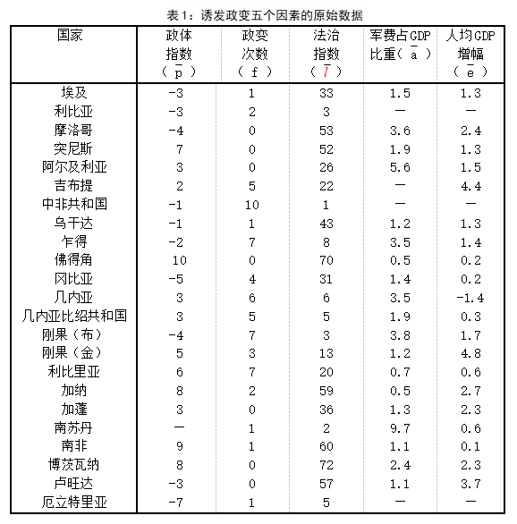
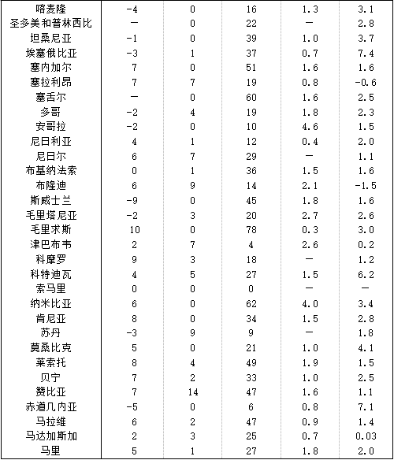
（二）数据的整理与计算
为了便于变量之间的比较，我们将已收集的数据按照一定规则进行整理。
首先，将上述五个变量按诱发政变的难易程度进行排序。
其次，按一定规则将54个国家划分至四个区间，并依次对四个区间内的变量赋值1、2、3、4。其中，根据某些变量的实际情况，可将具备一定特征的变量归并至一个区间，优先赋值，再将该组其余数据按照诱发政变风险程度，依等百分位比划分至三个区间，并有序赋值。
例如，在考察政体因素诱发政变时，可优先将混合政体（|p|＜5）的变量，赋值为4；在观察某国冷战后政变发生频次变量时，对从未发生政变的变量（f=0）赋值为1；在观察某国军费开支对诱发政变的影响上，对处在正常范围内的变量（1.90≤a≤2.60），优先赋值为1；在考察国内经济状况对政变发生的影响时，对经济发展停滞及衰退（`e≤0）的情况，优先赋值为4。最后，将被赋值的变量带入公式，测算出该国的政变风险系数z值,并进行排序。
然后，利用 percentile 函数来分别求解五个变量中第 n 个百分位数。
先将变量数组进行排序，将已有数据带入如下公式计算，其中n为数组的个体总量， p n 为数组中所求的百分位，
** k** ** =（** ** n-1** ** ）×** ** p** ** n**
然后，将所得 k 值的整数部分标记为 i, k 值的小数部分标记为j,再将已知数据导入公式：
** R** ** =(** ** 1-** ** j)** ** ×** ** array(i+1)+j** ** ×** ** array(i+2)**
就可得到如下表 2 中的数据：
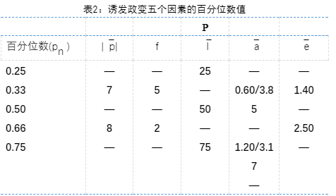
根据表 2 中各数组的百分位数以及上述规定的赋值规则，可在每个数组中形成若干个区间。分别将54个国家的 | ** **p|** **、** **f** **、** ** ** l** 、 ** **a** **、** ** e
五个变量导入所在区间（详见表 3 ）。
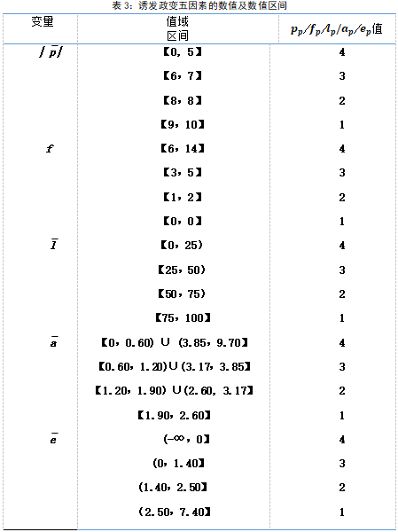
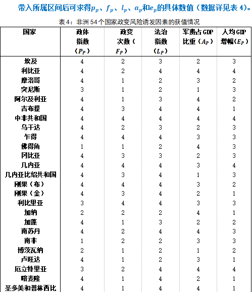
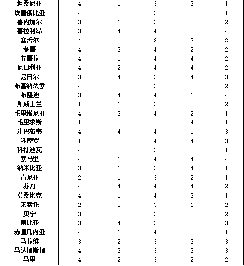
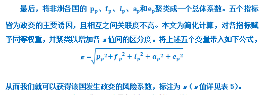
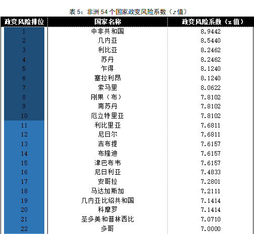
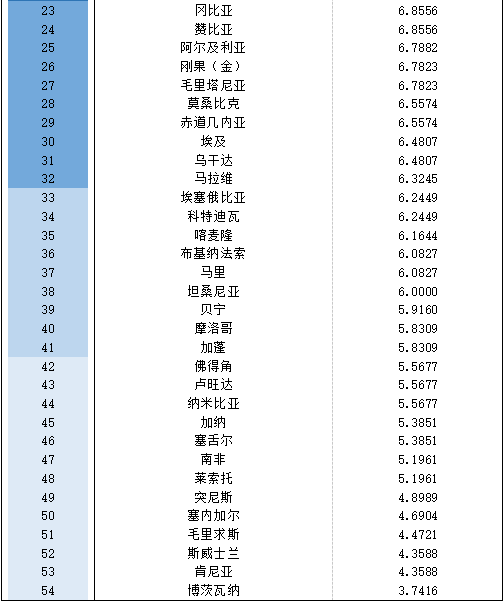
（三）测量的结果
如表 5 所示，54个非洲国家的 z 值均在 【 2.2336 ， 8.9944 】 区间之内。其中，政变发生风险最高的国家为中非共和国，其z值为8.9442；风险最低的国家为博茨瓦纳，其 z 值为3.7416。就整体而言，z值分布均匀；就各个国家而言，其间有呈现出明显的区分。可以认为本文对非洲各国发生政变风险的测量是有效的。
本文 按z值的高低顺序进行排列，从整体的每20百分位数为单位，将54个国家区分成潜在政变风险极高、较高、中等、较低和极低五个等级。 依具体国别来看，存在极高政变风险的非洲国家共10个，分别是中非共和国、几内亚、利比亚、苏丹、乍得、塞拉利昂、索马里、刚果（布）、南苏丹和厄立特里亚。存在较高政变风险的非洲国家有12个，分别是利比里亚、尼日尔、吉布提、布隆迪、津巴布韦、尼日利亚、安哥拉、马达加斯加、几内亚比绍共和国、科摩罗、圣多美和普林西比，以及多哥。存在中等政变风险的非洲国家共10个，分别是冈比亚、赞比亚、阿尔及利亚、刚果（金）、毛里塔尼亚、莫桑比克、赤道几内亚、埃及、乌干达和马拉维。存在较低政变风险的非洲国家共9个，分别是埃塞俄比亚、科特迪瓦、喀麦隆、布基纳法索、马里、坦桑尼亚、贝宁、摩洛哥、加蓬。存在极低政变风险的非洲国家共13个，佛得角、卢旺达、纳米比亚、加纳、塞舌尔、南非、莱索托、突尼斯、塞内加尔、毛里求斯、斯威士兰、肯尼亚、博茨瓦纳（详见图5）。
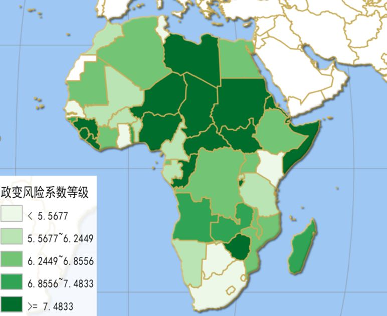
图5. 非洲国家政变风险等级图示
三、 对非洲国家政变趋势的分析
上述部分通过对非洲54个国家间的横向比较，全景式勾勒出各国潜在政变风险的强弱。本章节拟将时间维度纳入这一议题的考察范围，尝试更为深入地探讨非洲国家政变的变化趋势及其原因。
冷战时期，美苏两国在欧亚大陆的争夺剑拔弩张，但同时双方同样忌惮“雅尔塔协议”利益版图的改变可能引爆第三次世界大战。 在非洲各政治势力中寻找能够遏制对手渗透、开展“热战”的“战争代理人”，成为冷战时期美苏共同的非洲战略。1966年加纳首任总统克瓦米·恩克鲁玛在越南访问时，国内突然发生军事政变。其后多方档案披露，美国中央情报局驻加纳首都阿克拉分站工作人员深度介入该事件中，意在颠覆总统恩克鲁玛的亲社会主义路线。同一时期苏联政府通过暗中拉拢、支持反政府军官发动政变，更迭亲美政权的手段也大抵如此。美苏两国之所以倾向于在非洲国家中支持反对派政变，其原因在于:首先，使用隐蔽手段打击敌方，符合冷战时代的斗争特点; 其次，军事政变是实现权力快速更迭最有成效的方法之一; 最后，与大规模的武装斗争相比，军事政变对资金、技术、人员等要素所耗不多，易于传递的情报信息发挥了极大作用。正是由于军事政变具备上述特点，冷战期间非洲国家发生的大多数军事政变背后都有美或苏政府的支持。上述特点同样反映出两极对抗的国际政治格局是这一时期非洲地区各国高频发生军事政变的重要外部原因。
与 国际趋势相符，非洲地区政变事件的数量在冷战结束之时达到了峰值后开始下降，总体呈回落态势。 据美国“系统和平中心”数据显示，2010-2016年非洲地区54个国家先后共经历37次政变事件。其中，通过政变成功实现权力更迭的国家仅有3例，分别是2010年2月尼日尔军官萨洛·吉博推翻坦贾政权，2012年３月，马里军人阿马杜·萨诺戈推翻总统阿马杜·杜尔政权，以及2013年7月埃及武装部队领导人法塔赫·塞西推翻总统穆罕默德·穆尔西的政变。加之2017年11月津巴布韦军方成功推翻总统穆加贝的事件，近8年来非洲仅有4例成功政变。考虑到非洲历史上经历了连年不断的政治动荡，可以说该地区已经进入政治发展大体稳定、政变事件低频偶发的阶段。
冷战后，“一超多强”的国际政治格局和“和平与发展”的时代主题给非洲国家提供了相对安全的政治环境和更为宽松的发展空间。就国内因素而言，非洲各国政府在保持稳定、发展经济和关注民生等领域取得了一定的成就；就国际因素而言，联合国开发计划署（UND P ）、世界卫生组织（WHO）、国际货币基金组织（IMF）等国际组织以及中、美等援助国家也为非洲人民生活水平的提高贡献了力量。 据统计，2005-2013年的8年间，非洲54个国家的平均实际GDP增长率为5.1%。虽然碍于诸多具体因素，非洲仍呈现不均衡的发展态势，但其成就依然值得肯定。经济状况的改善及人民生活水平的提高，从根本上降低了非洲地区发生政治动荡的可能性，这也是作为其具体表现形式之一的军事政变近年来发生频次持续走低的宏观因素。
对非洲国家政变风险中观层次的分析，应将更多关注各国政局走向。结构- 功能主义政治学认为，系统的良性运转有赖于内部结构的平衡，政治冲突的根源在于各派政治势力失衡。政治系统内部结构从紊乱失序到尖锐冲突有一定的发展过程，因而对政治局势的发展有足够审慎的观察与分析，是可以对潜在的风险做出合理预判的。 近年来，不少非洲国家最高领导人贪图权势，通过各种手段谋求延长任期，这可能成为引发政治动荡，特别是军事政变的导火索。冷战结束后，不少非洲国家建立了英、美式的多党民主体制，该体制对最高领导人任期有所限制。但强人政治在非洲地区的盛行，致使不少国家宪法的限任条款屡遭蔑视。尝试修改或废除宪法限任条款的非洲国家有吉布提、喀麦隆、阿尔及利亚、乌干达、乍得、加蓬、多哥和苏丹八国；宪法中对任期毫无限制的国家有安哥拉、南苏丹、冈比亚等12国之多。行政领导人贪恋权势、久居高位势必遭到各派政治力量的不满，矛盾尖锐化后将引发政治动荡。长期关注民主相关议题的调查机构“非洲晴雨表组织”在2015年发布的一份报告里披露，75%的非洲民众强烈赞成限制最高领导人的任职时限。2014年10月初，执政27年之久的布基纳法索总统布莱斯·孔波试图通过修宪取消连任一届的限制，不仅引起民众大规模抗议，更引发军事政变，最后被迫下台。非洲国家在任领导人谋求延长任期，久居其位，这既与上文中的政体诱因相关，也与法治诱因相关，很可成为引发同类国家政变风险的公共因子。且此现象并非鲜见于非洲个别国家，已有愈演愈烈之势，在进行中观层次分析时应给予更多关注。
为使诱发政变的军方因素可操作化，本文选取了“军费负担指数”作为测量军人集团在政治体系中地位的量化指标。但在实际的政治生活中，军官群体所拥有的情感、意志、欲望、信念、信仰等非理性心理因素同样发挥了重要的作用。 普通人复杂的心理活动尚难以为外界所知晓，肩负特殊使命，并以行使暴力为业的军官群体心理活动则更为复杂。人类心理活动的复杂、不易察觉等特质决定了对军官群体的社会心理活动分析适宜在微观层次进行。同样，心理活动的善变性决定了对潜在的政变宜作短期预判。非洲国家政体差异较大，且政局风云诡谲，逐一分析各国军界高层的政治心理是作者力所不逮的。本文采用案例分析法探讨近期津巴布韦发生的政变，简述军方的心理活动如何诱发政变事件。
长期以来，总统穆加贝一直牢牢掌控军队，政府与军方保持了良好的关系。但近年这一格局被穆妻格蕾丝·穆加贝领导的新生政治势力G40（该派系要员年龄多在四、五十岁，因故得名）所打破。2014年，格蕾丝通过政治手段逼退女性副总统乔埃斯，自己则谋取执政党ZA- NU的多重要职。失败者乔埃斯的亡夫曾任副总统和国防军总参谋长等要职，在军队人脉颇深。格雷斯的恶劣行径招致军界反感。2017年，格蕾斯用同样的手法排挤掉第一副总统姆南加古瓦，致使其流亡国外，这成为压倒总统穆加贝的最后一根稻草。发动政变的津巴布韦国防军总司令康斯坦丁·奇文加将军正是前副总统姆南加古瓦昔日军情部门的老部下。乔埃斯和姆南加古瓦的失势，使得军界同僚对自身命运感到忧虑和恐慌，这也是诱发此次政变的导火索。 （本文经国政学人微信公众平台编辑首发）
四、 结语：中国应对非洲国家政变风险的具体措施
政变作为一种发生频次高，危害性大，可预测性低且诱因复杂的政治现象，有着深刻而具体的政治、经济、社会、心理根源。研究非洲国家的政变现象，既是比较政治学科体系建构的内在要求，也是对规避中资企业投资风险有益的理论探讨。 本文尝试分析了诱发非洲国家政变的五个因素，通过概念化和可操作化将其聚类成该国潜在政变风险系数。并通过宏观、中观和微观三个层次分析了非洲国家可能的政变趋势。面对非洲54个国家纷繁复杂的政治局势，如何保护中国政府、企业及公民的在非利益不受当地政变事件的影响，本文提出如下建议。
首先，我国政府应密切关注非洲各国，特别是首都及各大城市的民情、社情。 军事政变是政治斗争最直接的表现形式之一，有深刻的社会经济根源。民情、社情是分析该国状况，预判政治动向的最基本、最真实的参考资料。特别是非洲大陆远离中国本土，只有吃透该国国情的基本盘，预测潜在的政变，做出有效应对才成为可能。
其次，我国驻非使领馆应密切关注所在国政局走向，广泛交友，最大数量团结亲华友华的各派政治力量。 随着中国国力的强大，以及中国企业对非的大量投资，中国在非的话事权日渐增大。我国驻当地的使领馆人员有信心也有能力广结善缘，多方交友。只有拥有足够多的朋友，才能保证政变一旦发生，不管何者掌握政权，都不会做出危害中资企业和我国公民的人身及财产安全的妄举。
最后，深化与早年来华受训军官情谊，建立对中方企业及人员在非遭遇政变等特殊动荡提供柔性保障。 建国后，我国各高等军事院校陆续为不少非洲国家培训了大量的年轻军官。这些年轻军官回国后进入军队，经过多年努力陆续走上领导岗位。密切与早年来华受训军官的友谊，有利于及时破解我方人员在非遭遇政变等特殊情况而可能形成的困境。
（注：本文经国政学人微信公众平台编辑首发。文章有删节，完整内容及参考文献可参看原文。）
文章来源： 《世界经济与政治论坛》2018年第1期
筛选：晞哲 编辑：小宜 晞哲